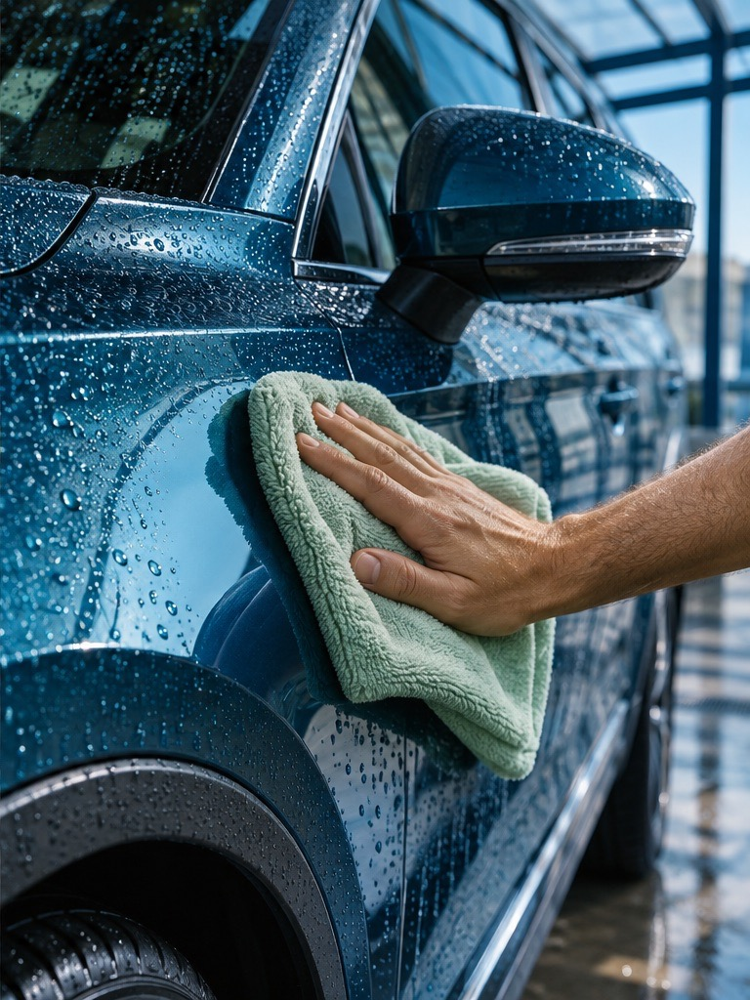

Araç Temizleme
Kuşadası’nda iç ve dış araç temizliği farkı
İç ve dış araç temizliğinde hangi yüzeylerin ele alındığını kapsamı seçmeden önce öğrenin.
Yazıyı okuYazlıkta aracınızı nerede park ettiğinize ve nasıl kullandığınıza göre basit bir temizlik rutini kurun.

Davutlar’da araç ağaç altında kalıyorsa yapışkan damlalar ve yapraklar, açık parkta duruyorsa toz daha sık görülebilir. Hızlı bir haftalık kontrol için ön camı, tavanı, kaputu ve kapı altlarını gözden geçirin.
Cam görüşünü etkileyen izleri ve gevşek iç mekân kumunu ayrı ele alın. Sahil ekipmanını çıkarırken bagaj tabanını da kontrol edin. Her kısa kontrolde tüm aracı ayrıntılı temizlemek yerine gözleme göre kapsam seçin.
Uzun yol öncesi cam, ayna ve bagaj tabanına öncelik verin. Ailecek kullanılan araçta kişisel bez ve paspasları tamamen kurutarak saklayın. Park koşulları değiştiğinde rutini mevsime göre yeniden düzenleyin.
İVSU Blog

Araç Temizleme
İç ve dış araç temizliğinde hangi yüzeylerin ele alındığını kapsamı seçmeden önce öğrenin.
Yazıyı oku
Araç Temizleme
Kuşadası Long Beach çevresindeki sahil günlerinden sonra bagajı kum, nem ve eşyalar açısından kontrol edin.
Yazıyı oku
Araç Temizleme
Araç koltuğunda leke gördüğünüzde malzemeyi ve lekenin kaynağını belirleyerek başlayın.
Yazıyı oku